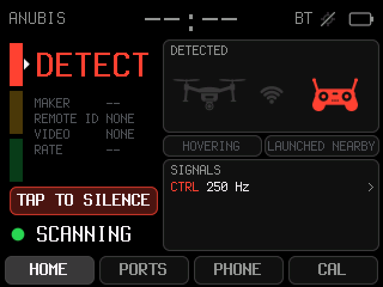

The Anubis 1.0 release on the firmware page has the landscape screen shown here. Bastet 0.9 has a portrait screen. Commands that start with python3 tools/ need the project's tools, which aren't publicly available.
Quickstart
Applies to master firmware 0.12.0 (landscape screen).
This quickstart takes you from a finished unit to its first alert. It takes about ten minutes. Most of that time goes to one calibration and to a test with your own aircraft.
Before you begin, the unit must be built and flashed. To build it, see the wiring guide. To flash it, see Update the master's firmware.
Before you switch on
| Check | Why |
|---|---|
| All three antennas are fitted. | Without its antenna, a sensor appears to work but receives almost nothing. See antennas in the wiring guide. |
| The battery is connected, or a USB supply of 2 A or more is connected to the master's own port. | Either one powers the whole unit. A sensor's USB port alone doesn't. |
| Optional: A TF card is in the slot. | The master writes a log to the card. The card must be FAT32 and 32 GB or smaller. Insert it before you switch on. Inserting a card while the master runs hasn't been tested. |
| Your own aircraft, remote control, and video goggles are switched off. | The calibration learns every signal that's on the air. |
| The antennas are as high and as unobstructed as you can carry them. | A unit that you hold up receives from farther away than a unit in a bag. |
Switch on
Hold the master's power button for about 1 s.
The unit plays four rising notes and shows the Home screen. The Home screen has a bar at the top, the alert level on the left, three icons and a list of signals on the right, and four buttons at the bottom.

Check the status light
The status light is at the lower left of the Home screen.
| The light shows | Meaning | What to do |
|---|---|---|
| SCANNING with a green dot | Both sensors are linked and listening. | Continue with the next section. |
| SCANNING in yellow with a warning sign | One sensor is starting, or it doesn't respond. | Wait a few seconds. If the light stays yellow, press PORTS, and then see Troubleshooting. |
| NO RADIO in red | Neither sensor responds. | See Troubleshooting. |
For more detail, press PORTS. Each port shows UP in green, with RADIO RUNNING and SETTINGS OK under it. To return, press HOME.
The battery icon at the top right shows the charge. The BT label beside it is gray until a phone connects.
Check the alert level
With nothing on the air, the level on the left shows CLEAR in green. The three icons are unlit, and the list shows NO SIGNALS.
If the level is NOTICE, DETECT, or CONFIRMED, a signal is already on the air, which is common indoors. The rows on the right show what the signal is. To stop the sound, tap the left side of the screen. The calibration handles signals that belong to the place.
Optional: Pair your phone
The unit works without a phone. Without one, the master's clock isn't set. The app isn't publicly available. If you don't have a phone with the app, skip this section.
To pair your phone, follow these steps:
-
On the master, press PHONE. Note the name that the screen shows, such as
UAS Master-1A2B. -
In the app, find the master and select that name. The master shows PAIRING REQUEST.
-
On the master, press ALLOW. The master shows six digits.
-
On the phone, type the six digits within about 30 seconds. Android ends a pairing about half a minute after it starts.
If the pairing times out, select the master in the app again. After you press ALLOW, pairing stays open for 120 s.
The BT label turns blue, and the top bar shows the time. The master takes the time from the phone, so make sure that the phone's clock is correct.
Calibrate the place
A calibration learns the signals that belong to a place so that they don't raise alerts there. Calibrate every time you arrive at a new place.
To calibrate the place, follow these steps:
-
Make sure that your own aircraft, remote control, and video transmitter are switched off.
-
Press PORTS, and check that both ports show UP. Then press HOME.
-
Press CAL.
-
If the unit was last used at another place, press FORGET ALL.
-
Press 60 S.
The screen shows CALIBRATING, a countdown, and a count such as 2 SIGNALS LEARNED SO FAR, with a line for each signal. When the countdown ends, the screen shows a summary such as LAST RUN: 2 NEW, 0 STRONGER and lists the known signals.
-
Read the list. Each line is a signal that raises no alert at this place unless it returns more than 10 dB stronger.
If a line is your own equipment that you forgot to switch off, press FORGET ALL, switch the equipment off, and calibrate again.

A learned signal can also quiet a later transmitter. On a learned video carrier, the unit alerts only for a signal more than 10 dB stronger. A learned control link has the same effect on every control link with the same packet rate.
CLEAR after a calibration means that the unit reports no signal it hasn't learned. It doesn't mean that nothing is in the air. If an alert remains, identify the signal before you calibrate again. An unexplained alert might be a signal that you want to detect.
The Cal screen can also show the following lines:
| Line | Meaning |
|---|---|
| LAST RUN: 0 NEW, 0 STRONGER | Nothing was on the air. No signals needed to be learned. |
| 1 AIRCRAFT SIGNAL: NOT LEARNED, in yellow | An aircraft broadcast its identity during the calibration. The unit never learns such a signal and continues to alert for it. |
| NO ALERT FOR …, in green | How long the unit has raised no alert since the calibration. Watch this line for a minute or two. |
Keep the default sensitivity
A new unit is set to medium for all three kinds of sensor. Try the unit at medium first. For what low and high change, see Sensitivity and other settings.
Test the unit with your own aircraft
- Press HOME.
- Switch on your remote control a few meters from the unit.
- Switch on the aircraft or its video transmitter.
| What you switched on | What the unit shows |
|---|---|
| An ExpressLRS remote control on 2.4 GHz | DETECT in red. The controller icon turns red, and the aircraft icon stays unlit. The list has a row with a red CTRL tag, named by its packet rate. The unit plays three quick beeps, then single beeps. |
| An analog video transmitter on 5.8 GHz | DETECT. The aircraft icon is gray with its camera in red. The list has a row with a VID tag, named by its FPV channel. |
| Both | CONFIRMED. The red step blinks, the aircraft and controller icons are both red, and the sound changes to a warble. |
| An aircraft that broadcasts Remote ID | DETECT. The whole aircraft icon is red. The list has a row with a RID tag, named by the aircraft's ID. |
| An aircraft flown from a phone over Wi-Fi | DETECT. The aircraft icon and the Wi-Fi sign are red. If the unit knows the network's name, the list has a row with a WAIR tag, named by the network. |



The unit lists analog video 3 to 5 s after the transmitter comes on, and a control link from a real remote control within 1 to 2 s. It lists a Remote ID broadcast within 0.4 to 8 s, depending on how the broadcast is sent.
Next, try the following:
- To stop the sound, tap the left side of the screen. The left side shows SOUND OFF.
- To see a signal's details, tap its row. The signal's screen shows what the signal is, shows its level in numbers, and has the buttons that mute it.
- To see the alert end, switch everything off again. The video row disappears after about 10 s, the control row after 11 to 14 s, and a Remote ID row after 30 s. The level returns to CLEAR. For how the levels work, see Alert levels.
If the unit listed nothing, check the following:
- Your aircraft might use a kind of link that the unit doesn't detect. See What the unit can detect.
- The calibration might have learned the signal. A learned signal appears as a gray row that shows KNOWN and stays silent.
Switch off
- Hold the power button for about 2 s. The screen turns dark.
- Unless you plan to use the unit again soon, unplug the battery.
The power button switches off only the master. The two sensors stay powered from the battery. The sensors are designed to sleep while the master is off, but that sleep hasn't been tested on either sensor. Two sensors that never sleep drain a 1000 mAh battery in hours to a day. See the power button in the wiring guide.
What's next
- To learn what every screen, color, and sound means, see the user guide.
- To do one task at a time, such as muting a signal, recording a walk, or preparing for a test day, see the how-to guides.
How this is known
Statements on this page are read from the firmware unless this section lists them as measured or estimated. The user guide explains the three words.
| Statement | How it's known |
|---|---|
| A unit that you hold up receives from farther away than a unit in a bag | Estimated |
| Android ends a pairing about half a minute after it starts | Measured, 14 Nov 2026, on the master. See the master's measurements |
| Analog video listed 3 to 5 s after the transmitter came on, and a real remote control's link within 1 to 2 s | Measured, 14 and 15 Nov 2026, in bench tests |
| A Remote ID broadcast listed within 0.4 to 8 s, depending on how it's sent | Measured, 14 and 15 Nov 2026, in bench tests |
| The control row disappears 11 to 14 s after the remote control is switched off | Estimated. See Alert levels |
| Inserting a card while the master runs | Not tested |
| The sensors sleep while the master is off | Not tested on either sensor |
| Two sensors that never sleep drain a 1000 mAh battery in hours to a day | Estimated, in the wiring guide |